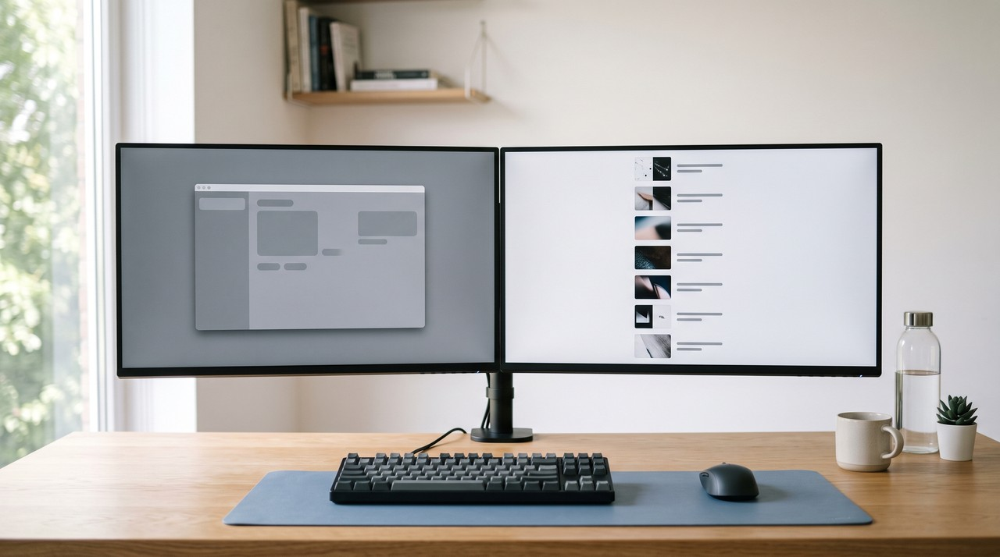
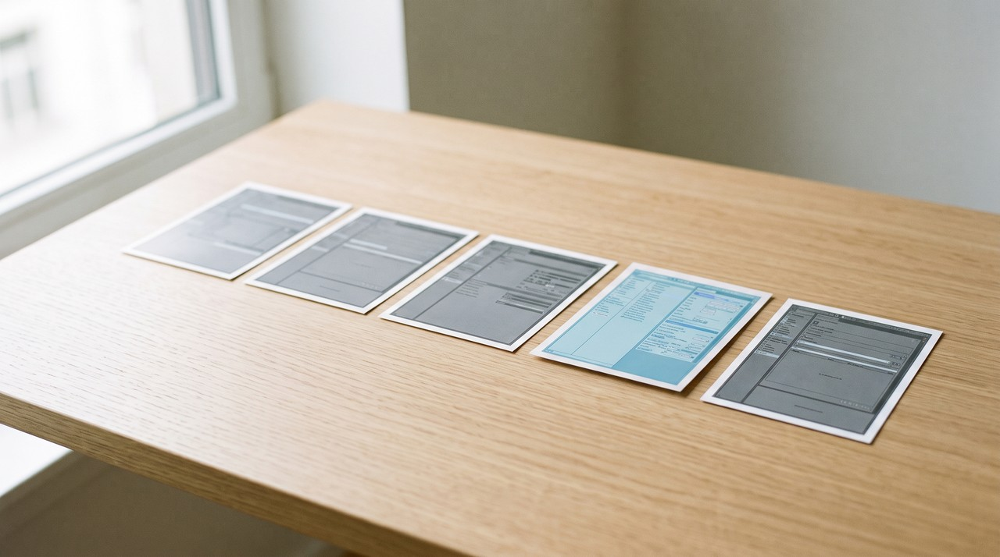

How to turn a video into an SOP with screenshots
Run the screen recording through VideoDoc on your own computer, and you get a capture of every screen change next to the words spoken over it. Use those captures as your steps, putting one picture per step with a short line under it, and let your AI write the text. If a capture misses a step, save the recording as images at four a second and pick the exact frame yourself.
You might have a recording of someone doing a task and need an SOP from it, so you picture a written document with a few pictures. I notice the SOPs people actually follow are built the other way around. The screenshot is the step, and the words are just a caption under it. A new person looks at the picture, finds the same button on their own screen, reads one line, and clicks.
An SOP is a standard operating procedure, which is the written "this is how we do it here" for a task. My other guide on turning a training video into an SOP is about getting the words right. This page focuses on the pictures. I explain which frame to use for each step, how to hide private data, and how to update a single step without redoing the whole document.
Why should the screenshots carry the SOP and not the text?

This setup matters because of how people actually read an SOP. They do not read it top to bottom like an article. They keep the task open in one window and the SOP in the other, so their eyes dart back and forth. A picture makes sense in a single glance, but a paragraph takes time to read, and the person loses their place in the real app.
The layout I use is very simple. I make one step equal one screenshot, put one line of plain instruction under it, and add an optional note to explain why. For example, "Click Export, then choose CSV" goes under the picture, and "CSV because the old format breaks the report" goes in the note. If a step needs two screenshots, I break it into two separate steps.
What are the ways to get the screenshots out of a video?
There are three main ways to handle this job. They differ mostly in where your video goes and who picks the pictures.
| Way | Where the video goes | Who picks the screenshot | Who writes the step |
|---|---|---|---|
| Pause and screenshot by hand | Nowhere | You | You |
| Cloud video to SOP tools, such as Kommodo | Uploaded to their servers | Their AI | Their AI |
| VideoDoc plus your own AI | Stays on your computer | VideoDoc, and you for the hard ones | Your AI, from the transcript |
Doing this by hand is slow but honest work. SOPX sells SOP software, and they put manual conversion at 2.5 to 6 hours for a 10 minute video, mostly because you spend time pausing, grabbing and cropping. Cloud tools are fast, and Kommodo's page says you upload an MP4, MOV or WebM up to 1GB to get numbered steps with annotated screenshots. If your recording is fine to upload, that is the quicker product and I would say so.
But many SOP recordings show an admin panel, real customer names or a private internal tool. You cannot upload that kind of recording to a server, and that is when processing it on your own machine matters.
How do I make the screenshot SOP on my own computer?
- Open VideoDoc, choose the Local tab, pick the recording, and choose A document for AI.
- Set quality to Best, so small text in menus and dialogs stays readable in the pictures.
- Set density to Detailed. It keeps a capture when the screen changes, at least four seconds after the last one, up to 320 captures. That is the right spacing for clicking through menus.
- If a webcam bubble is in the corner, tick the face cover. It fills the face with solid black in the pictures and in the document.
- Press Start. You get a PDF and a Markdown copy with every capture sitting beside the sentence that was said over it.
- Press Copy for AI and paste it into ChatGPT or Claude with this: write one step per capture, one short instruction line each, keep my reasons as notes, and quote the timestamp so I can find the picture.
Now every step has a screenshot and a line of text. I paste them into Word or Google Docs in order, dropping in one picture and one line at a time, and the SOP is ready. The timestamp sitting next to each step is exactly what makes the rest of this process work.
What if the screenshot caught the wrong moment?

This problem happens often, and the cloud tools do not talk about it. A capture happens when the screen changes, so it sometimes catches a menu while it is still sliding open or a page that is only half loaded. It might also grab a frame where the mouse sits right over the button you want to show, and I notice this on my own recordings a lot.
The best fix is to go back to the recording and pull the exact frame yourself. You run the same file again and select Every frame as images. VideoDoc will save the entire recording as pictures at four a second, drop any picture that is a byte for byte copy of the previous one, and write a frames_index.csv file that lists every picture by its exact moment. It skips the transcript this time, so the whole thing finishes much faster.
You take the timestamp of the bad step, open the four pictures from that second and the next one, and use the last clean frame before the next click. By that point, the menu is fully open and the page is completely loaded. The tool names each file by its exact moment, like frame_000123_00h01m45.50s.jpg, so finding the right one takes just seconds. I share more details on that lookup in the frames CSV index guide.
How do I keep the SOP easy to update?
SOPs usually break when the software updates. A single button moves, and suddenly step 7 shows a screen that nobody sees anymore. If fixing that one error means redoing the entire document, people just ignore it and the SOP stays broken.
I recommend saving the picture for each step with its number and timestamp in the file name, like 07-export-00m42s.jpg. When the app changes later, you just record the small part that changed, pull a new frame, and swap out that single picture. The text under the image usually stays exactly the same, and the rest of the SOP is left untouched.
VideoDoc does not write the numbered steps, but your AI does that using the transcript and captures. It does not draw arrows or red boxes on the screenshots either, so you add those yourself in Word, Google Docs or Paint. The face cover only hides faces, and a customer name, email address or password on the screen stays visible. You need to crop or cover those parts by hand before sharing the document, and the software works strictly on local files and public videos only.
Get every step's picture without uploading the video.
See what the output looks like free in your browser first. Pro is one payment for a lifetime licence on 2 machines, Windows or Apple Silicon Mac.
Quick questions
Can I make an SOP with screenshots from a video I already recorded?
Yes, you can run the file through VideoDoc on your own computer, and it gives you a capture of every screen change next to the narration. Your AI then turns those images into one step per picture, and nothing gets uploaded to the internet.
Will the tool add arrows and highlights to the screenshots?
No, VideoDoc just gives you clean pictures. Drawing one red box or arrow per screenshot yourself in Word, Google Docs or Paint takes only a few seconds for each image.
What if my recording has no voice?
You still get the automatic captures, and choosing every frame as images gives you the entire recording as a set of pictures. You can ask your AI to write one plain line per screenshot, or you can write the text yourself.
Does it hide passwords and customer data on screen?
No, it only covers faces. Anything private on the screen stays in the picture, so you must crop or cover it before you share the SOP. I always suggest recording with test data in the first place to avoid this problem.
You probably have a recording that people keep asking you to rewatch. Take that video tonight, and turn it into a simple guide with one picture and one line per step.

I am a telecom engineer and business analyst from Pakistan, and I build small honest desktop tools under Designesh. I made VideoDoc because I wanted my AI to read the lectures I study from. Everything here is tested on my own machine first.